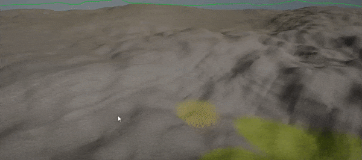

HOWTO: Create terrain material
In this tutorial, you will learn how to create and use a custom terrain material that blends between various textures.
1. Create new material
In Content window use Right-click and select option New -> Material, then specify its name and hit Enter.

Then double-click on an asset to open the dedicated editor.
2. Set Domain to Terrain
In material properties panel change its Domain to Terrain.
3. Create material
Add various landscape textures and implement simple linear blending using the texture layer weights (as shown in the picture below).
4. Assign material to terrain
Save created material and assign it to the terrain Material property.
You can also override per chunk material using the toolbox.
5. Paint the layers
To use the paint tool select the Toolbox -> Paint -> Select Layer and pick the terrain actor to paint over it.
Now using the left mouse button you can paint over the terrain with the textures you specified in material.
